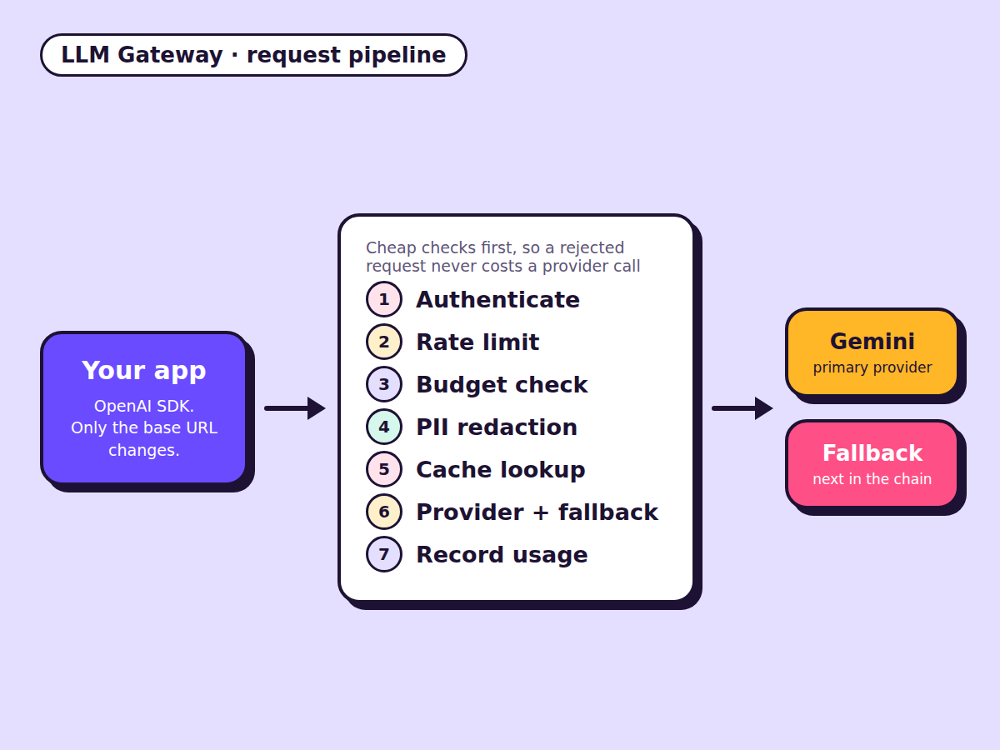

Newest · October 2026
LLM Gateway
83 tests · cache hits about 89x faster (simulated provider)
- The problem
- When several teams call LLM providers directly, nobody sees total cost, repeated questions are paid for every time, one outage takes everything down, and customer data can leak into prompts.
- What I built
- An OpenAI-compatible gateway: apps change only their base URL, and it adds authentication, rate limits, monthly budgets, PII redaction, caching, provider failover and per-team cost reporting.
- What I learned
- A load test exposed a database connection-pool bug that looked healthy in the latency numbers. I fixed it and pinned it with a regression test. Built in three days and runs locally.
Python, FastAPI, Postgres, Redis, SQLAlchemy, Docker Compose, pytest, Locust
View the code on GitHub